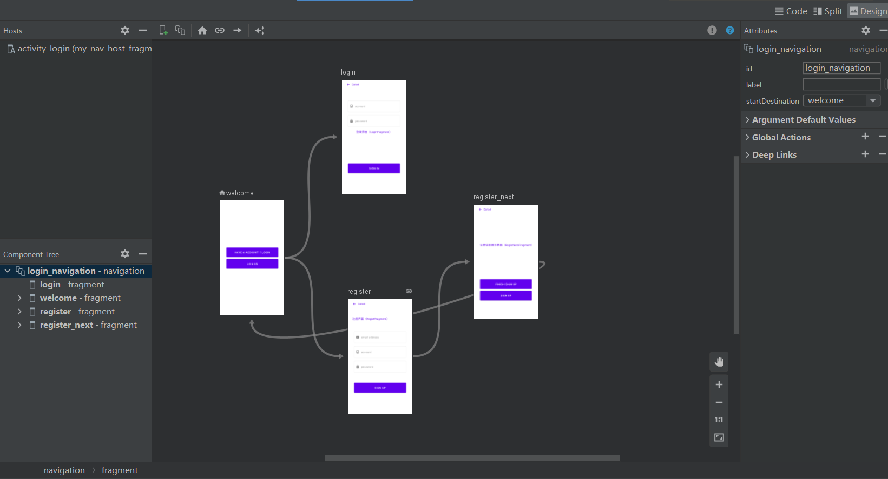

Navigation 是一个框架，用于在 Android 应用中的“目标位置”之间导航。该框架提供一致的 API，无论目标位置是作为 Fragment、Activity 还是其他组件实现的。
本文讲会从三个步骤去深入了解Navigation，使用Navigation、理解Navigation、解析Navigation,由于篇幅问题解析Navigation在单独一篇
官方文档 项目地址：https://github.com/googlecodelabs/android-navigation https://codelabs.developers.google.com/codelabs/android-navigation/#0
Sameple展示 自己实现的Navigation的Sample，它的效果大概是这样：https://github.com/J-a-g/GunDom/tree/navigation
使用Navigation
无论是否认可，我们都必须承认，Google已经在尝试让Kotlin上位，无论是今年IO大会的 数据展示，还是官方文档上的 代码示例片段，亦或是Google最新 开源Demo的源码，使用语言清一色 Kotlin，本文亦然。
1. 在build.gradle中添加以下依赖
1 2 3 4 5 6 dependencies { implementation "androidx.navigation:navigation-fragment-ktx:$rootProject.navigationVersion" implementation "androidx.navigation:navigation-ui-ktx:$rootProject.navigationVersion" }
如需将 Safe Args 添加到您的项目中，请在顶层 build.gradle 文件中包含以下 classpath：
1 2 3 4 5 6 7 8 9 buildscript { repositories { google() } dependencies { def nav_version = "2.3.5" classpath "androidx.navigation:navigation-safe-args-gradle-plugin:$nav_version" } }
请将以下行添加到应用或模块的 build.gradle 文件中：
1 apply plugin: "androidx.navigation.safeargs"
2.新建Fragment
3.新建导航文件

1 2 3 4 5 6 7 8 9 10 11 12 13 14 15 16 17 18 19 20 21 22 23 24 25 26 27 28 29 30 31 32 33 34 35 36 37 38 39 40 41 42 43 44 45 46 47 48 49 50 51 52 53 54 55 56 57 58 59 60 61 62 63 64 65 66 67 68 69 <?xml version="1.0" encoding="utf-8" ?> <navigation xmlns:android="http://schemas.android.com/apk/res/android" xmlns:app="http://schemas.android.com/apk/res-auto" xmlns:tools="http://schemas.android.com/tools" android:id="@+id/login_navigation" app:startDestination="@id/welcome" > <fragment android:id="@+id/login" android:name="com.yin.mvvmdemo.fragments.login.LoginFragment" android:label="LoginFragment" tools:layout="@layout/fragment_login" /> <fragment android:id="@+id/welcome" android:name="com.yin.mvvmdemo.fragments.login.WelComeFragment" android:label="WelComeFragment" tools:layout="@layout/fragment_welcome" > <action android:id="@+id/action_welcome_to_login" app:destination="@id/login" /> <action android:id="@+id/action_welcome_to_register" app:destination="@id/register" /> <!-- app:enterAnim="@anim/slide_in_right" --> <!-- app:exitAnim="@anim/slide_out_left" --> <!-- app:popEnterAnim="@anim/slide_in_left" --> <!-- app:popExitAnim="@anim/slide_out_right" --> </fragment> <fragment android:id="@+id/register" android:name="com.yin.mvvmdemo.fragments.login.RegistFragment" android:label="RegistFragment" tools:layout="@layout/fragment_regist" > <action android:id="@+id/action_register_to_register_next" app:destination="@id/register_next" /> <argument android:name="EMAIL" android:defaultValue="2005@qq.com" app:argType="string" /> <argument android:name="myarg" android:defaultValue="Android!" /> <!-- TODO STEP 11.1 - Add a deep link to www.example.com/{myarg}/ --> <deepLink app:uri="www.example.com/{myarg}" /> </fragment> <fragment android:id="@+id/register_next" android:name="com.yin.mvvmdemo.fragments.login.RegistNextFragment" android:label="RegistNextFragment" tools:layout="@layout/fragment_regist_next" > <action android:id="@+id/action_regist_next_to_welcome" app:destination="@id/welcome" app:popUpTo="@id/welcome" app:popUpToInclusive="true" /> </fragment> </navigation>
4.编辑LoginActivity Navigation 非常简单，我们首先编辑Activity的布局文件，并在布局文件中添加一个NavHostFragment :
1 2 3 4 5 6 7 8 9 10 11 12 13 14 15 16 17 18 19 20 21 22 23 24 25 <?xml version="1.0" encoding="utf-8" ?> <androidx.constraintlayout.widget.ConstraintLayout xmlns:android="http://schemas.android.com/apk/res/android" xmlns:app="http://schemas.android.com/apk/res-auto" android:layout_width="match_parent" android:layout_height="match_parent" > <fragment android:id="@+id/my_nav_host_fragment" android:name="androidx.navigation.fragment.NavHostFragment" android:layout_width="match_parent" android:layout_height="match_parent" app:defaultNavHost="true" app:navGraph="@navigation/login_navigation" /> </androidx.constraintlayout.widget.ConstraintLayout> class LoginActivity : AppCompatActivity() { override fun onCreate (savedInstanceState: Bundle? ) super .onCreate(savedInstanceState) setContentView(R.layout.activity_login) } }
5.配置Fragment的跳转事件
这里有这几种常见跳转场景：
介绍完常见的几种跳转场景，我们配置nanavigation.xml中的action，跳转正是根据action的配置，才能知道要跳转到那个界面，配置如下：
1 2 3 4 5 6 7 8 9 10 11 12 13 14 15 16 <fragment android:id="@+id/welcome" android:name="com.yin.mvvmdemo.fragments.login.WelComeFragment" android:label="WelComeFragment" tools:layout="@layout/fragment_welcome" > <action android:id="@+id/action_welcome_to_login" app:destination="@id/login" /> <action android:id="@+id/action_welcome_to_register" app:destination="@id/register" app:enterAnim="@anim/slide_in_right" app:exitAnim="@anim/slide_out_left" app:popEnterAnim="@anim/slide_in_left" app:popExitAnim="@anim/slide_out_right" /> </fragment>
app:destination对应的就是跳转的目标，同时也可以在action中配置跳转的动画，下面看一下如何实现上面提到的几种跳转场景，前提以及配置了action，
(1). 普通跳转
1 2 3 4 5 6 7 8 9 10 11 12 val options = navOptions { anim { enter = R.anim.slide_in_right exit = R.anim.slide_out_left popEnter = R.anim.slide_in_left popExit = R.anim.slide_out_right } } view.findViewById<Button>(R.id.btn_login).setOnClickListener { findNavController().navigate(R.id.login, null , options) }
(2). 跳转并传值给下一个界面
1 2 3 4 5 6 7 8 9 10 11 12 13 14 15 16 17 18 19 20 21 22 23 24 25 26 27 28 29 30 31 32 33 34 35 36 37 38 39 40 41 42 43 44 45 46 47 48 49 50 <fragment android:id="@+id/register" android:name="com.yin.mvvmdemo.fragments.login.RegistFragment" android:label="RegistFragment" tools:layout="@layout/fragment_regist" > <action android:id="@+id/action_register_to_register_next" app:destination="@id/register_next" /> <argument android:name="EMAIL" android:defaultValue="2005@qq.com" app:argType="string" /> <argument android:name="myarg" android:defaultValue="Android!" /> <!-- TODO STEP 11.1 - Add a deep link to www.example.com/{myarg}/ --> <deepLink app:uri="www.example.com/{myarg}" /> </fragment> view.findViewById<Button>(R.id.btn_register).setOnClickListener { val action = WelComeFragmentDirections.actionWelcomeToRegister().setMyarg("suchengjian" ).setEMAIL("1090@qq.com" ) findNavController().navigate(action) } view.findViewById<Button>(R.id.btn_register).setOnClickListener { val bundle = Bundle() bundle.putString("name" , "sudaqiang" ) bundle.putString("sex" , "man" ) bundle.putParcelable("user" , User("苏大强" , "1" , "60" )) findNavController().navigate(R.id.action_welcome_to_register, bundle) } val safeArgs: RegistFragmentArgs by navArgs() val text = safeArgs.email + ":" + safeArgs.myarg tv.setText(text) etEmail.setText(safeArgs.email) val name = arguments ?.getString("name" ) val sex = arguments ?.getString("sex" ) val user: User? = arguments ?.getParcelable<User>("user" ) Log.w("scj" , "===>" + name + ":" + sex + ":" + user.toString())
(3). 返回上一个界面
1 2 3 view.findViewById<TextView>(R.id.tv_cancel).setOnClickListener { Navigation.findNavController(it).navigateUp() }
(4). 指定向上导航
1 2 3 4 5 6 7 8 9 10 11 12 13 14 15 16 <fragment android:id="@+id/register_next" android:name="com.yin.mvvmdemo.fragments.login.RegistNextFragment" android:label="RegistNextFragment" tools:layout="@layout/fragment_regist_next" > <action android:id="@+id/action_regist_next_to_welcome" app:destination="@id/welcome" app:popUpTo="@id/welcome" app:popUpToInclusive="true" /> </fragment> view.findViewById<Button>(R.id.btn_finish_sign_up).setOnClickListener { findNavController().navigate(R.id.action_regist_next_to_welcome, null ) }
理解Navigation 通过上面的代码，我们已经实现了Fragment的导航，接下来我的了解一下每个类的职责，理解一下框架的设计思想
1.NavHostFragment 导航界面容器
想展示一个Fragment，我们首先要定义一个容器去承载它，实际上NavHostFragment内部是实例化了一个FrameLayout，用于导航和显示Fragment，看一下NavHostFragment的onCreateView()方法：
1 2 3 4 5 6 7 8 9 10 11 12 13 14 15 16 17 18 19 20 21 22 23 24 25 26 27 28 29 30 @Nullable @Override public View onCreateView(@NonNull LayoutInflater inflater, @Nullable ViewGroup container, @Nullable Bundle savedInstanceState) { FrameLayout frameLayout = new FrameLayout(inflater.getContext()); frameLayout.setId(getId()); return frameLayout; } <?xml version="1.0" encoding="utf-8" ?> <androidx.constraintlayout.widget.ConstraintLayout xmlns:android="http://schemas.android.com/apk/res/android" xmlns:app="http://schemas.android.com/apk/res-auto" android:layout_width="match_parent" android:layout_height="match_parent" > <fragment android:id="@+id/my_nav_host_fragment" android:name="androidx.navigation.fragment.NavHostFragment" android:layout_width="match_parent" android:layout_height="match_parent" app:defaultNavHost="true" app:navGraph="@navigation/login_navigation" /> </androidx.constraintlayout.widget.ConstraintLayout>
注意一下这两个属性，
app:defaultNavHost=”true” 此属性可确保您NavHostFragment拦截系统返回按钮也可以重写AppCompatActivity.onSupportNavigateUp()方法
2.navigation.xml: 声明导航结构
指的就是res/navigation/**.xml文件，就是上面的app:navGraph=”@navigation/login_navigation”
1 2 3 4 5 6 7 8 9 10 11 12 13 14 15 <?xml version="1.0" encoding="utf-8" ?> <navigation xmlns:android="http://schemas.android.com/apk/res/android" xmlns:app="http://schemas.android.com/apk/res-auto" xmlns:tools="http://schemas.android.com/tools" android:id="@+id/login_navigation" app:startDestination="@id/welcome" > <fragment android:id="@+id/login" android:name="com.yin.mvvmdemo.fragments.login.LoginFragment" android:label="LoginFragment" tools:layout="@layout/fragment_login" /> </navigation>
在navigation的节点下有这样一个属性，app:startDestination=”@id/welcome”，意思就是这个导航结构图中第一个显示的界面
3.Action标签：声明导航行为
一个简单的action是这样的
1 2 3 <action android:id="@+id/action_welcome_to_login" app:destination="@id/login" />
app:destination声明了这个行为导航的destination（目的地）。这个action的意思，就是我们可以跳转到对应id为login的Fragment界面上，这里就是指LoginFragment
1 2 3 view.findViewById<Button>(R.id.btn_sign_up).setOnClickListener { findNavController().navigate(R.id.action_welcome_to_login, null ) }
同时action中可以设置转场动画，如：
1 2 3 4 5 6 7 <action android:id="@+id/action_welcome_to_register" app:destination="@id/register" app:enterAnim="@anim/slide_in_right" app:exitAnim="@anim/slide_out_left" app:popEnterAnim="@anim/slide_in_left" app:popExitAnim="@anim/slide_out_right" />
4.通过代码进行导航
整个导航行为其实是通过Navigation进行处理，可以说是一个重要的核心类，我们通过获取 NavController，然后调用 NavController.navigate()方法进行导航。
通过传入ActionId，指定对应的导航行为；同时可以通过传入Bundle以数据传递；或者是再传入一个NavOptions配置更多（比如 转场动画，它也可以通过这种方式进行代码的动态配置）。
其他 Sample中Navigation配合导航栏的时候这里没有说明，直接看项目吧
参考文章
即学即用Android Jetpack - Navigation